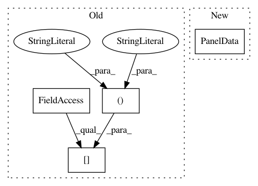

5d8b81e16143d6eea9e86a586fe737854c03c772,linearmodels/tests/panel/test_between_ols.py,,test_missing,#Any#,144
Before Change
assert_results_equal(res, ols_res)
clusters = mod.dependent.dataframe.copy()
clusters.loc[:, :] = 0
clusters = clusters.astype(np.int32)
for entity in mod.dependent.entities:
clusters.loc[entity] = np.random.randint(9)
After Change
ols_res = ols.fit(cov_type="robust")
assert_results_equal(res, ols_res)
vc1 = PanelData(missing_data.vc1)
ols_clusters = vc1.dataframe.groupby(level=0).mean().astype(np.int32)
ols_clusters = ols_clusters.reindex(mod.dependent.entities)
res = mod.fit(reweight=True, cov_type="clustered", clusters=missing_data.vc1)
In pattern: SUPERPATTERN
Frequency: 3
Non-data size: 4
Instances
Project Name: bashtage/linearmodels
Commit Name: 5d8b81e16143d6eea9e86a586fe737854c03c772
Time: 2017-04-07
Author: kevin.k.sheppard@gmail.com
File Name: linearmodels/tests/panel/test_between_ols.py
Class Name:
Method Name: test_missing
Project Name: bashtage/linearmodels
Commit Name: 5d8b81e16143d6eea9e86a586fe737854c03c772
Time: 2017-04-07
Author: kevin.k.sheppard@gmail.com
File Name: linearmodels/tests/panel/test_panel_ols.py
Class Name:
Method Name: test_cluster_smoke
Project Name: bashtage/linearmodels
Commit Name: cf6a25ed5aae0f78e42b7b9594f54772880aaf53
Time: 2017-04-02
Author: kevin.k.sheppard@gmail.com
File Name: linearmodels/panel/model.py
Class Name: PanelOLS
Method Name: _validate_data